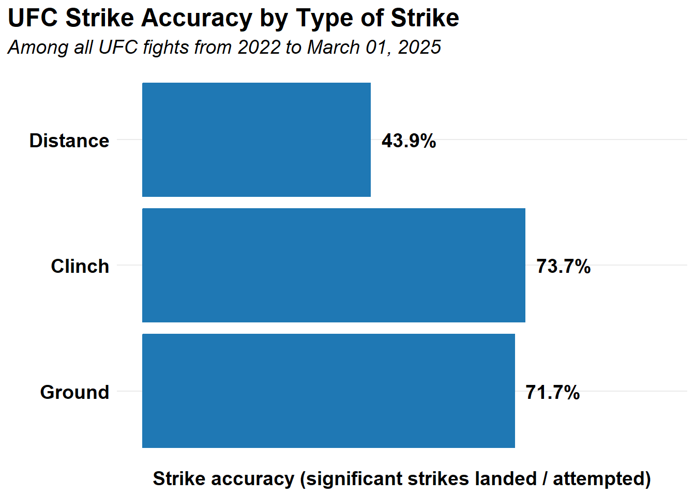
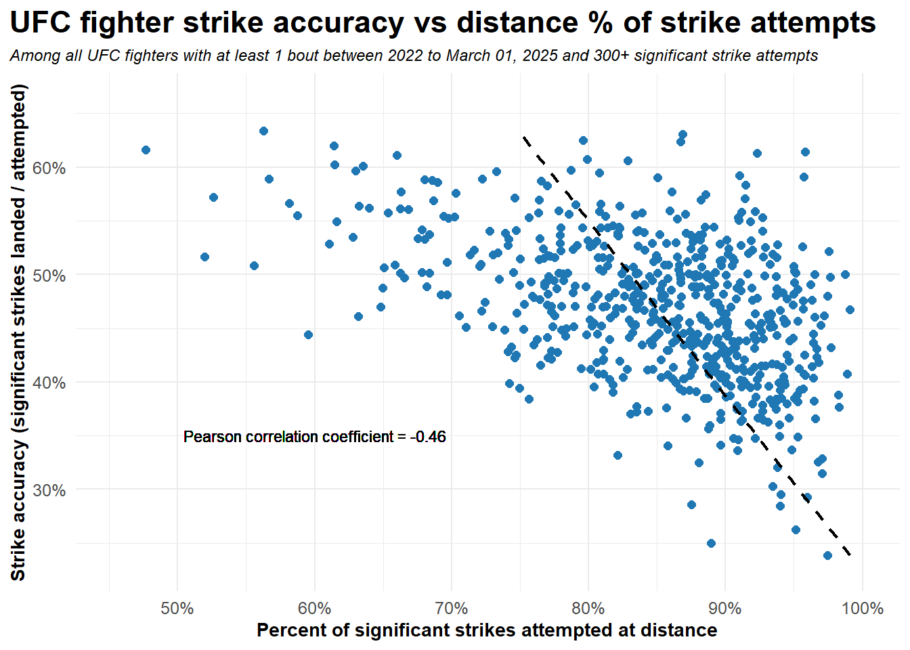
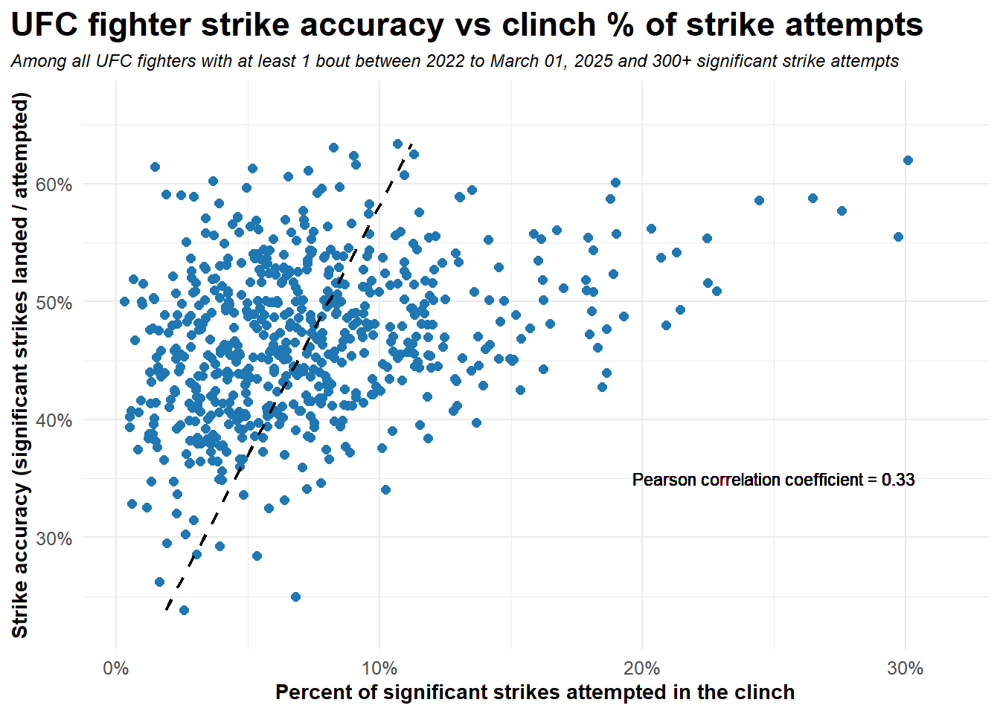
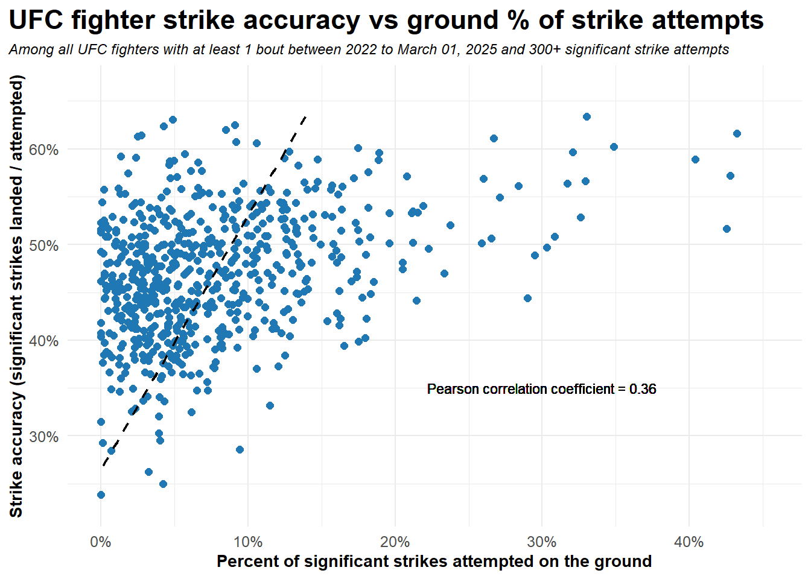
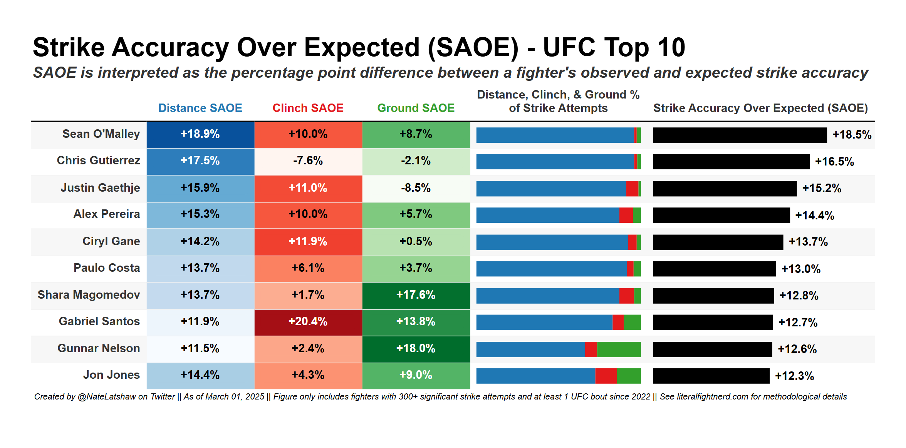

Introduction
The Ultimate Fighting Championship (UFC) recently introduced a new strike accuracy-related metric for broadcasts. In short, certain types of strikes (e.g. power punches to the body from a mounted position) are easier to land than others (e.g. head kicks from distance). Since these different types of strikes land at significantly different rates, a fighter’s strike accuracy can be more a function of striking tendencies than an actual, informative measure of a fighter’s ability to land strikes.
To solve this limitation of strike accuracy as a metric, the UFC computes an expected strike accuracy based on both (a) the types of strikes that each fighter throws and (b) the rate at which each type of strike has landed historically across all fighters. Then, the difference between a fighter’s observed and expected strike accuracy is computed to serve as a more meaningful measure of accuracy.
This blog post utilizes this concept to formally introduce Strike Accuracy Over Expected (SAOE), a new metric that aims to quantify a fighter’s striking precision in a manner that improves upon the traditional strike accuracy metric. The details are provided below in this post, but put simply, SAOE has three desirable properties:
SAOE is easily interpreted - it is interpreted as the percentage point difference between a fighter’s observed and expected strike accuracy.
SAOE offers new insights - it contains a frame of reference for strike accuracy against which to compare to a fighter’s performance and wraps that up into a single, composite metric that quantifies striking precision.
SAOE facilitates meaningful comparisons between fighters with different styles - it is correlated with strike accuracy but uncorrelated with striking tendencies.
As a final note, the concept of SAOE is grounded in advanced analytics work from other sports. For instance, within the last couple years, National Football League (NFL) analysts have shown that a quarterback’s raw completion percentage is not strongly correlated with performance. In fact, some lower-quality quarterbacks have high completion percentages because they often throw short, safe passes. To improve upon completion percentage as a metric, Completion Percentage Over Expected (CPOE) was developed. CPOE calculates the probability that a pass will be completed based on a number of factors (e.g. how far the ball travels in the air, the down and yards to go for a first down, etc.) and then computes the difference between a quarterback’s observed and expected completion percentage. Completing a high percentage of safe throws is not equivalent to completing the same percentage of challenging throws, and since CPOE is able to distinguish between the two, it has been shown to be a much more meaningful measure of quarterback performance.
With this blog post, we now have an advanced metric that is similar in concept and function to better quantify striking precision in the UFC.
Motivation: why strike accuracy is limited
Strike accuracy, defined as the number of significant strikes a fighter lands divided by the number attempted, is easy to understand but is often not informative as a single measure of striking ability. Consider the figure below, which shows that distance strike accuracy is significantly lower than clinch and ground accuracy. Hence, an average fighter who only throws strikes from distance will have a lower strike accuracy than an average fighter who only throws strikes from the clinch and on the ground, and this difference would be purely due to striking tendencies rather than skill differences.
To further illustrate the point, the most common comparative use case of strike accuracy is (presumably) to determine which fighter is the more precise overall striker, and as such, strike accuracy as a metric can be problematic. The figure below shows that strike accuracy is negatively correlated with a fighter’s percent of significant strikes thrown at distance. Further, strike accuracy is positively correlated with a fighter’s percent of significant strikes thrown both from the clinch and on the ground. Thus, fighters who throw more strikes from distance tend to have lower strike accuracy, so when a kickboxer fights a grappler, comparing strike accuracy as a proxy for overall striking ability is likely to show the opposite of what is actually true.



Finally, the table below shows the top 10 UFC fighters with the highest strike accuracy, among fighters with 300+ significant strike attempts and 1+ bouts since 2022. Many on this list are not necessarily considered elite strikers, and most throw a relatively small percent of strikes from distance, which indicates their strike accuracy is largely driven by striking tendencies rather than precision. As such, this top 10 list is not particularly relevant.
| Fighter | Strike accuracy | Distance % of strike attempts | Significant strikes attempts |
|---|---|---|---|
| Anthony Hernandez | 63.4% | 56.3% | 748 |
| Alex Pereira | 63.1% | 86.9% | 921 |
| Christian Leroy Duncan | 62.5% | 79.6% | 363 |
| Shara Magomedov | 62.4% | 86.7% | 633 |
| Chidi Njokuani | 62.0% | 61.4% | 495 |
| Tatiana Suarez | 61.7% | 47.7% | 472 |
| Sean O'Malley | 61.5% | 95.8% | 1,645 |
| Ciryl Gane | 61.3% | 92.3% | 1,467 |
| Gunnar Nelson | 61.1% | 66.0% | 453 |
| Phil Hawes | 60.7% | 79.9% | 512 |
Therefore, strike accuracy is limited in its ability to depict anything meaningful when (a) considering one fighter at a time, (b) comparing two fighters, and (c) attempting to rank fighters. Enter SAOE, a new and improved measure for overall striking precision.
Calculating Strike Accuracy Over Expected (SAOE)
SAOE is interpreted as the percentage point difference between observed and expected strike accuracy based on the types of strikes thrown. Positive numbers indicate fighters are more accurate than we would expect given their strike attempt distribution, and thus, elite strikers often rank highly in SAOE.
Understanding SAOE is as simple as comprehending the paragraph above. Now, the rest of this section gets mildly technical to show the computational details of the SAOE metric, so here is your warning if that is not of interest - you should be able to safely skip to the next section that showcases the importance of SAOE. For everyone else, I attempt to keep the forthcoming notation light and as readable as possible.
Mathematically, SAOE is calculated as follows:
\[ SAOE = \text{Significant strike accuracy} - \text{Expected significant strike accuracy} \]
The only complexity underlying SAOE is then how to compute expected strike accuracy. The current version of SAOE separates distance, clinch, and ground strikes, and the expected accuracy is calculated for each bout using the corresponding accuracy of the given weight class from the prior calendar year. As an example, the expected distance strike accuracy for a Lightweight bout in 2025 is the total distance strike accuracy from all distance strikes thrown in Lightweight bouts in 2024. Expected clinch and ground strike accuracy is computed analogously. Also, for all Catchweight bouts (since there are so few) and for all fights in the debut year of a weight class, the expected accuracy metrics are calculated using all fights from the prior calendar year.
With this methodology, the updated formula for SAOE for a given fighter \(f\) is:
\[\begin{aligned} SAOE_f &= \text{Significant strike accuracy}_f - \text{Expected significant strike accuracy}_f \\ &= \frac{\text{Significant strikes landed}_f}{\text{Significant strikes attempted}_f} - \frac{\text{Expected significant strikes landed}_f}{\text{Significant strikes attempted}_f} \\ &= \frac{\text{Significant strikes landed}_f - \text{Expected significant strikes landed}_f}{\text{Significant strikes attempted}_f} \end{aligned}\]Now, let \(B_f\) be the set of UFC bouts for fighter \(f\), and let the prior year’s distance/clinch/ground strike accuracy be for the associated weight class for bout \(b\). Then, the formula for the expected number of significant strikes landed for the entire UFC career of fighter \(f\) is:
\[\begin{array}{l} \text{Expected significant strikes landed}_f = \\ \sum_{b \in B_f} \text{Expected distance strikes landed}_{f,b} + \text{Expected clinch strikes landed}_{f,b} \\ + \text{Expected ground strikes landed}_{f,b} = \\ \sum_{b \in B_f} \text{Distance significant strike attempts}_{f,b} * \text{prior year distance strike accuracy}_b \\ + \text{Clinch significant strike attempts}_{f,b} * \text{prior year clinch strike accuracy}_b \\ + \text{Ground significant strike attempts}_{f,b} * \text{prior year ground strike accuracy}_b \end{array}\]For those who do not follow the notation, the expected number of significant strikes landed for a given fighter in a single bout is the sum of the expected number of distance, clinch, and ground significant strikes landed. Next, the expected number of distance strikes landed is the number of distance significant strike attempts times the distance strike accuracy for the corresponding weight class in the prior year (and so on for expected clinch and ground strikes). Then, summing those values across all bouts in the given fighter’s career yields the expected number of significant strikes landed, which can be plugged into the equation above for \(SAOE_f\).
How SAOE improves upon strike accuracy
The objective of this section is to illustrate how SAOE improves upon strike accuracy as a more informative composite measure of striking precision while maintaining interpretability.
To start, consider Sean O’Malley’s strike accuracy and SAOE in the table below.
| Strike Accuracy | SAOE | Distance % of Strike Attempts |
|---|---|---|
| 61.5% | +18.5% | 95.8% |
Strike accuracy alone does not provide any context, meaning it is unclear if O’Malley’s accuracy is high or low because there is no point of reference. SAOE, on the other hand, contains that context and depicts how much more accurate O’Malley is than the aggregate of his peers. In this case, O’Malley’s SAOE of +18.5% indicates that his strike accuracy is 18.5 percentage points higher than expected; hence, his expected strike accuracy based on the distribution of distance, clinch, and ground strikes he throws is: 61.5% - 18.5% = 43.0%.
Comparing strike accuracy between fighters can further exacerbate the issue, as seen in the table below. Jailton Almeida has a noticeably higher strike accuracy than Ciryl Gane. However, that difference in strike accuracy is largely driven by striking tendencies - Almeida throws nearly all his strikes from the clinch or ground while Gane strikes almost exclusively from distance. When accounting for the inherent differences in distance, clinch, and ground strikes, SAOE shows that Gane is clearly the more precise striker, as we would expect.
| Fighter | Strike Accuracy | SAOE | Distance % of Strike Attempts |
|---|---|---|---|
| Jailton Almeida | 66.8% | -2.9% | 13.6% |
| Ciryl Gane | 61.3% | +13.7% | 92.3% |
The table below shows Pearson correlation coefficients that describe the strength and direction of the linear relationships between striking metric (i.e. strike accuracy and SAOE) and striking tendencies (i.e. percent of strikes thrown at distance, in the clinch, or on the ground). Pearson correlation coefficients range from -1 to 1 such that positive numbers indicate a positive linear relationship (and vice versa for negative numbers) and 0 indicates no linear relationship.
As we can see, strike accuracy is moderately correlated with striking tendencies, but SAOE is effectively uncorrelated with the distribution of a fighter’s strike attempts. This property of SAOE is desirable because, unlike strike accuracy, it allows for meaningful comparisons between fighters across striking styles and tendencies. Put another way, a fighter’s strike accuracy can be artificially inflated by being an average ground striker who only throws ground strikes. However, that is not possible with SAOE - this hypothetical fighter would have to be an above average ground striker to have a positive SAOE.
| Strike Accuracy | SAOE | |
|---|---|---|
| Distance % of strike attempts | -0.460 | -0.096 |
| Clinch % of strike attempts | 0.332 | 0.138 |
| Ground % of strike attempts | 0.361 | 0.029 |
Finally, the table below shows the top 10 fighters with the highest UFC career SAOE. Unlike the top 10 in strike accuracy shown in a prior table, this table features almost exclusively elite strikers, which is a positive sign for the SAOE metric’s ability to meaningfully quantify striking precision.
| Fighter | SAOE | Strike accuracy | Distance % of strike attempts | Significant strikes attempts |
|---|---|---|---|---|
| Sean O'Malley | + 18.5% | 61.5% | 95.8% | 1,645 |
| Chris Gutierrez | + 16.5% | 59.1% | 95.7% | 1,384 |
| Justin Gaethje | + 15.2% | 59.2% | 91.0% | 1,628 |
| Alex Pereira | + 14.4% | 63.1% | 86.9% | 921 |
| Ciryl Gane | + 13.7% | 61.3% | 92.3% | 1,467 |
| Paulo Costa | + 13.0% | 58.3% | 91.5% | 1,337 |
| Shara Magomedov | + 12.8% | 62.4% | 86.7% | 633 |
| Gabriel Santos | + 12.7% | 60.6% | 82.9% | 368 |
| Gunnar Nelson | + 12.6% | 61.1% | 66.0% | 453 |
| Jon Jones | + 12.3% | 58.9% | 72.2% | 2,655 |
Components of SAOE
SAOE serves as a composite measure of striking precision across all strikes. However, breaking SAOE into its distance, clinch, and ground striking components is also informative. The formula for, say, Distance SAOE is the same as SAOE, minus the clinch and ground strikes. Hence, Distance SAOE is interpreted as the percentage point difference between observed and expected distance strike accuracy. Clinch SAOE and Ground SAOE are interpreted similarly.
The table below shows the UFC’s top 10 in SAOE alongside each fighter’s Distance, Clinch, and Ground SAOE. We can see that Sean O’Malley predominantly strikes from distance, but his clinch and ground striking precision has been strong so far. However, while Chris Gutierrez also throws the majority of his strikes from distance, the precision of his clinch and ground striking has been lacking. Thus, breaking SAOE into its components can highlight the different strengths and weaknesses of a fighter’s striking game.

Limitations of SAOE
While SAOE offers a clear improvement over strike accuracy and has many desirable properties, this version of SAOE is based on publicly available data and thus far from perfect. For instance, rather than only partitioning strikes based on whether they were thrown from distance, in the clinch, or on the ground, we would also preferably distinguish between the strike type (i.e. punch, kick, knee, elbow) and the target (i.e. opponent’s head, body, or legs). All of these different attributes of a strike are presumably associated with an inherently different accuracy that SAOE would ideally account for, but unfortunately, current publicly available data does not provide that level of granularity.
Next steps
The natural follow on to SAOE is Strike Defense Over Expected (SDOE). Offensive striking only tells half the story of striking, so exploring how strike defense (defined as the number of significant strikes a fighter’s opponent misses divided by the number of significant strikes the opponent attempts) compares to an SDOE metric that accounts for the distribution of strike attempts faced at distance, in the clinch, or on the ground - alongside the associated expected strike defense of each - will hopefully be similarly valuable.
Finally, once both SAOE and SDOE are developed as composite offensive and defensive striking metrics, respectively, more work can be done to attempt to combine these metrics into a single, unified advanced striking metric that considers both offensive and defensive striking prowess relative to expectation. Stay tuned for more work on this front - the best way to do so is to follow me on Twitter at @NateLatshaw.